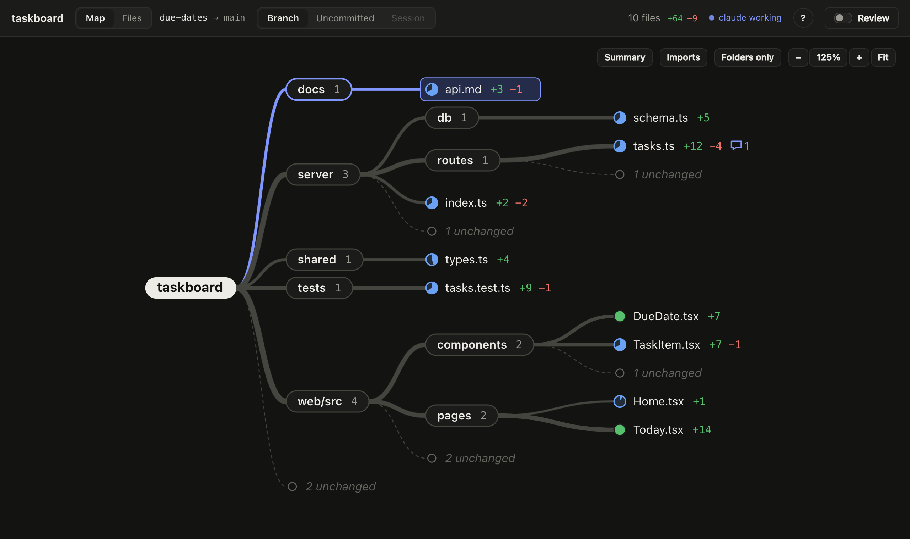
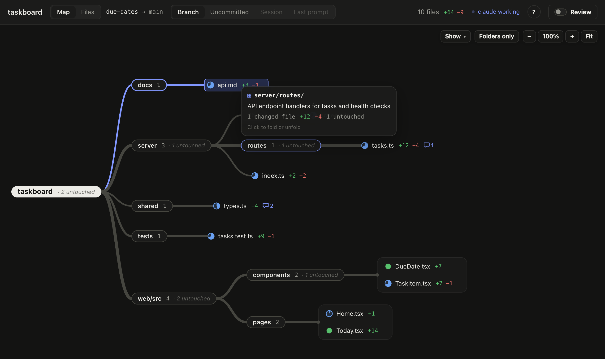
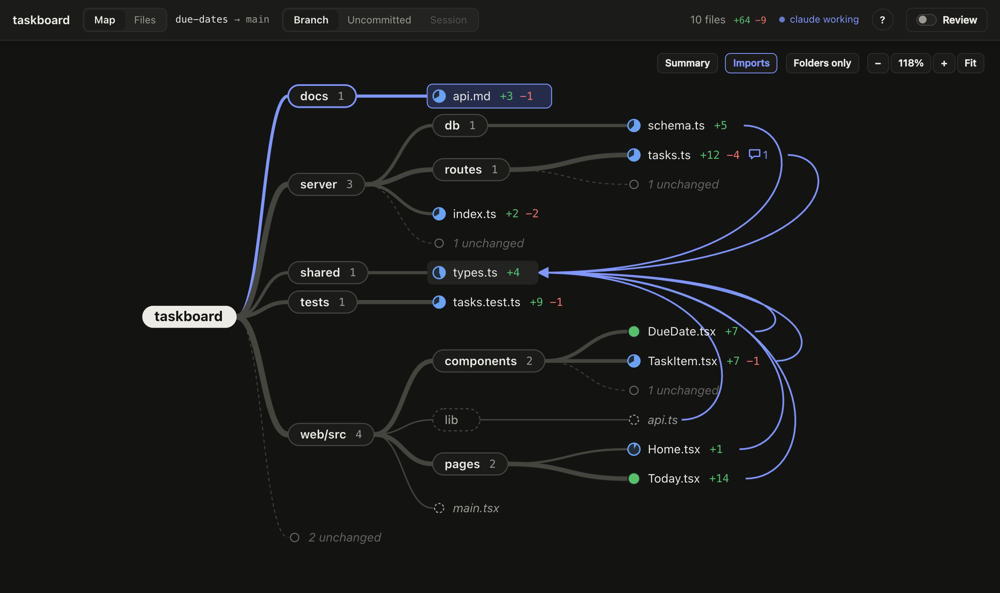
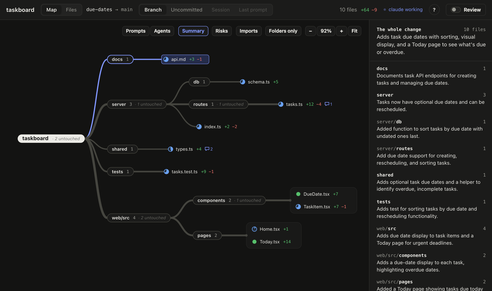
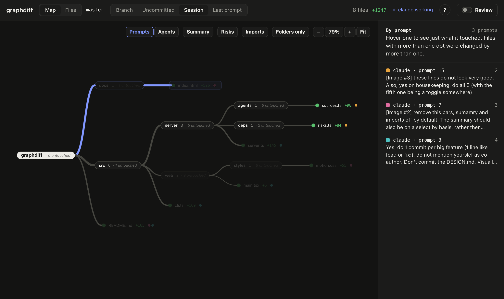
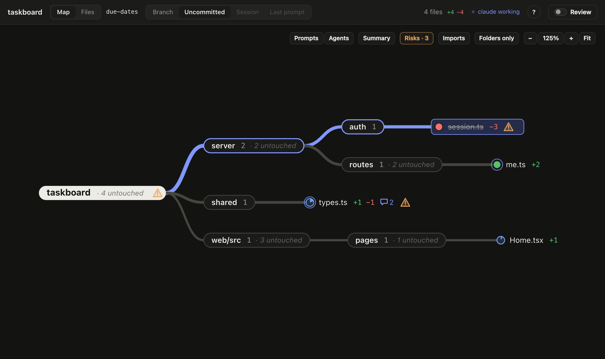
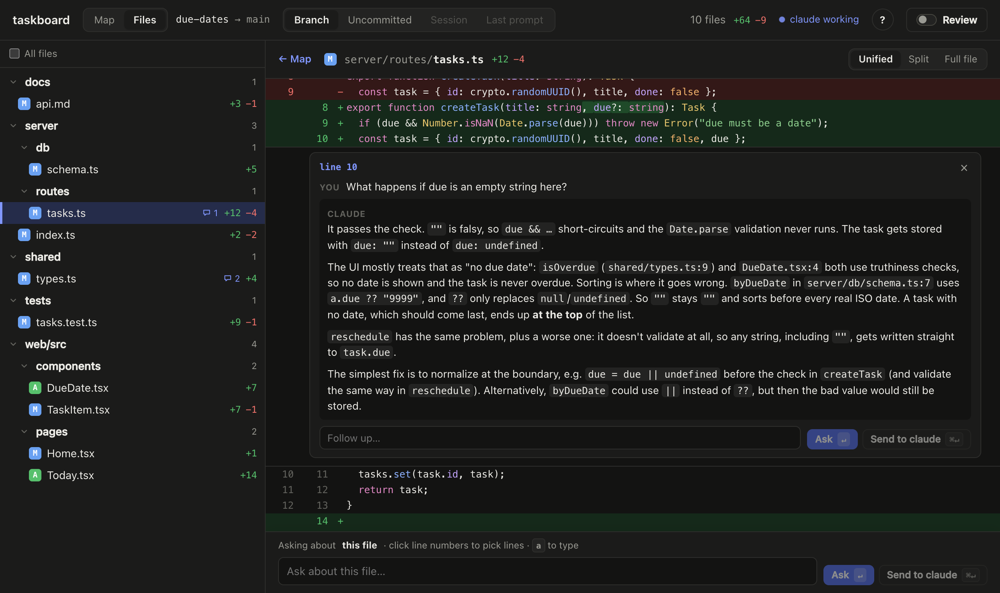

Press prefix+g and the repo's changes open as a live map: which folders, how much, and what depends on what.
herdr plugin install zenodea/graphdiffFiles flash as the agent writes. Thicker branches changed more; dots fill with how much of the file changed.
When an agent touches thirty files, the list doesn't tell you much. The shape does.
Folders branch to the files that changed. Backend, frontend, config: you see which at a glance, and it updates as the agent works.
Hover a file to see what it uses and what uses it, including unchanged files the change could still break.
Ask for a one-line summary of any folder, or the whole change. Written on demand, cached until it changes.
Hover any folder for a line on its role, written once by your agent. Learn a codebase as you review it.
Pick lines and ask. A read-only copy of your agent answers inline, or send the question to the agent in your pane.
Colour files by the prompt or the agent that changed them, and see where several agents overlap.
See only your last prompt's changes, and get a herdr notification with the shape of it when the agent finishes.
Flags rewrites, huge changes, broken imports and untested code, when you want a second look.
Flip on review mode to tick files off. If the agent edits one again, it comes back on its own.
An agent added due dates to a small task app, across the server, the shared types and the UI.
Where the change went, and how heavy it is down each branch. Untouched files fold into one grey node per folder.

Hover a folder and its card says what it's for in the codebase, so you can tell whether a change landed where it should.

Hovering shared/types.ts lights up everything that imports it, including files the agent never touched.

One sentence per folder, only when you ask for it.

Each file is coloured by the prompt that changed it. Hover one in the legend to see just its files.

Risk hints mark a deleted file that's still imported, an export something still uses, and code that changed with no tests.

Pick the lines, ask your question, and read the answer under them.

prefix+shift+g opens the same map right inside herdr, as an overlay over the pane you're in. Same scopes, same live updates, drawn in text: folders branch with box lines, files sit in grids, dots fill ○ ◔ ◑ ◕ ●. j k to move, Enter for the diff, i for folder notes, o to jump to the browser.
taskboard due-dates → main Branch Uncommitted Session Last prompt 10 files +64 −9 taskboard · 2 untouched ─┬─ docs 1 ─── ◕ api.md +3 −1 ├─ server 3 · 1 untouched ─┬─ db 1 ─── ◕ schema.ts +5 │ ├─ routes 1 · 1 untouched ─── ◕ tasks.ts +12 −4 │ ╰─ ◕ index.ts +2 −2 ├─ shared 1 ─── ◑ types.ts +4 ├─ tests 1 ─── ◕ tasks.test.ts +9 −1 ╰─ web/src 4 · 2 untouched ─┬─ components 2 · 1 untouched ─── ● DueDate.tsx +7 │ ◕ TaskItem.tsx +7 −1 │ ╰─ pages 2 ─── ◔ Home.tsx +1 ● Today.tsx +14 j k move · l/enter open · h fold · s scope · o browser · ? help · q quit
taskboard due-dates → main Branch Uncommitted Session Last prompt 10 files +64 −9 server/index.ts +2 −2 ── lines 1–4 ──────────────────── 1 − import { listTasks, createTask } from "./routes/tasks"; 1 + import { listTasks, createTask, reschedule } from "./routes/tasks"; 2 2 import { health } from "./routes/health"; 3 3 4 − export const routes = { listTasks, createTask, health }; 4 + export const routes = { listTasks, createTask, reschedule, health };
Needs herdr, git and Node 22 or newer. Questions and summaries go to the same kind of agent you're running: Claude Code, Codex or pi.
herdr plugin install zenodea/graphdiff
[[keys.command]] key = "prefix+g" type = "plugin_action" command = "graphdiff.open"
prefix+gIn any pane inside a git repo. Your browser opens on the map, and it stays live while the agent works. Add a prefix+shift+g binding for graphdiff.tui to get it in the terminal instead.